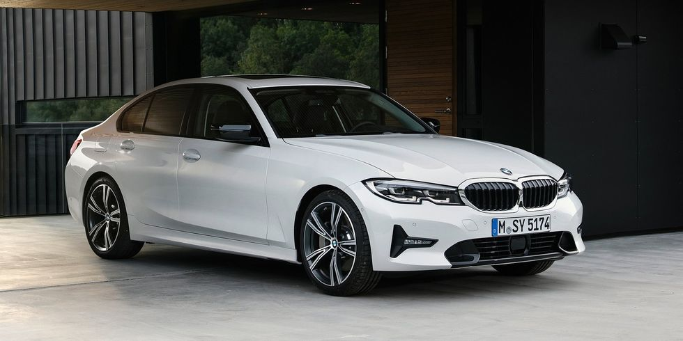
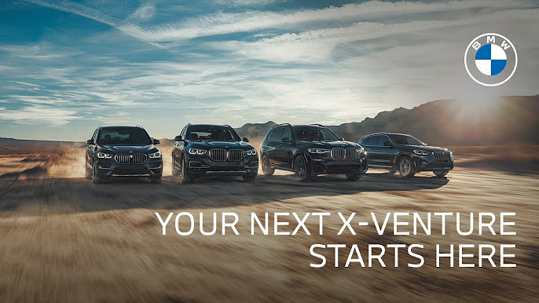
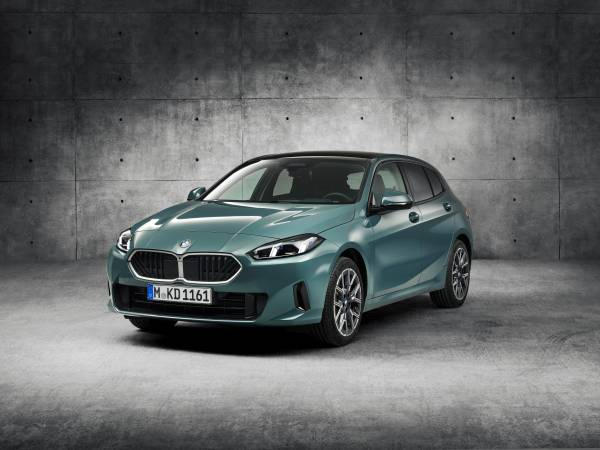

BMW Serie 3

El BMW Serie 3 es una serie de modelos de gama alta del segmento D del fabricante BMW con los cuales la firma alcanza los números de producción más altos. Ha sido producido por siete generaciones.
En junio de 1975 se presentó el primer Serie 3 como una actualización técnica de la Serie 02. En mayo de 1981 salió el ejemplar un millón de la línea del Serie 3. El Serie 3 es el vehículo más fabricado de BMW,formando el 30% de las ventas totales anuales de la marca BMW (excluyendo motocicletas) y habiendo vendido más de 15 millones de unidades hasta 2019. El BMW Serie 3 ha recibido múltiples galardones a lo largo de su historia.
La primera generación del Serie 3 estaba disponible únicamente como un sedán 2 puertas, sin embargo el rango del modelo se ha expandido desde entonces para incluir tipos de carrocería sedán 4 puertas, convertible 2 puertas, cupé 2 puertas, un familiar cinco puertas, hatchback 5 puertas ("Gran Turismo") y hatchback 3 puertas. Desde 2013 los modelos cupé y convertible han sido comercializados como el Serie 4, por lo tanto el rango del Serie 3 ya no incluye estos estilos de carrocería.
Descubre más en el sitio oficial de BMW Serie 3.
BMW Serie X
La Serie X incluye una gama de SUVs de lujo que ofrecen versatilidad y comodidad, perfectos tanto para la ciudad como para la aventura todoterreno. Los modelos de la Serie X, como el BMW X3, X5 y X7, combinan un diseño elegante con un rendimiento excepcional, brindando una experiencia de conducción premium. El BMW X7, por ejemplo, es el SUV más grande y lujoso de la marca, con capacidad para hasta siete pasajeros. El BMW X3, por otro lado, es un SUV compacto que ofrece un equilibrio perfecto entre tamaño y rendimiento. La Serie X de BMW es una opción popular para aquellos que buscan un vehículo espacioso y sofisticado.
Más información en BMW Serie X.
BMW i
La línea BMW i representa el compromiso de BMW con la sostenibilidad y la movilidad eléctrica, ofreciendo modelos como el BMW i3 y el BMW i8, diseñados para reducir el impacto ambiental sin sacrificar rendimiento. El BMW i3 es un vehículo eléctrico compacto que combina un diseño moderno con tecnología avanzada, mientras que el BMW i8 es un híbrido enchufable que ofrece un rendimiento deportivo y eficiencia energética. BMW i se ha convertido en un referente en el mercado de vehículos eléctricos, demostrando que la sostenibilidad y el lujo pueden ir de la mano. El BMW i8 ha sido galardonado múltiples veces como el mejor coche híbrido del mundo.
Visita BMW i para más detalles.